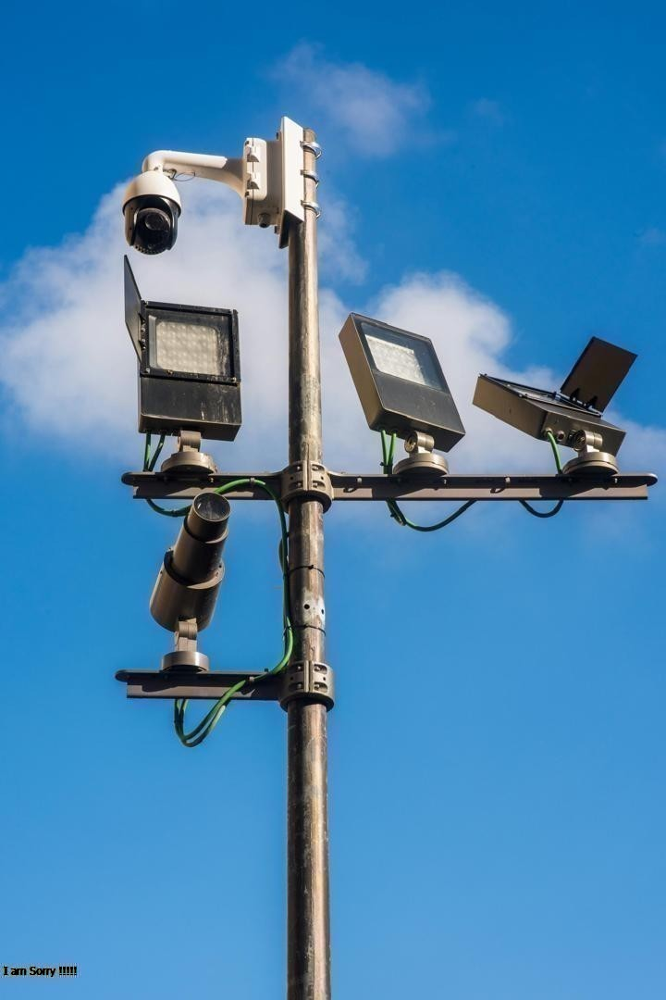
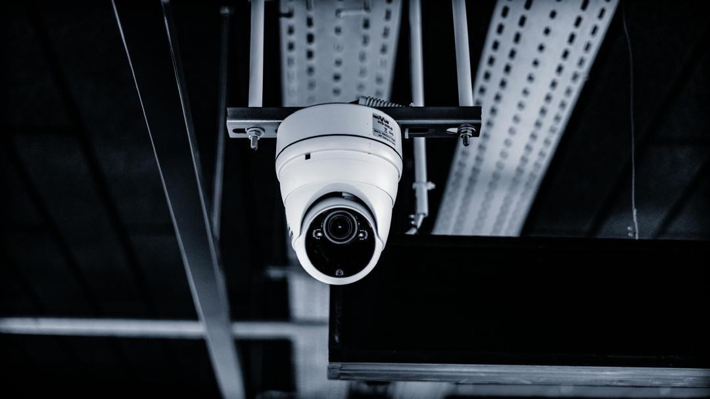
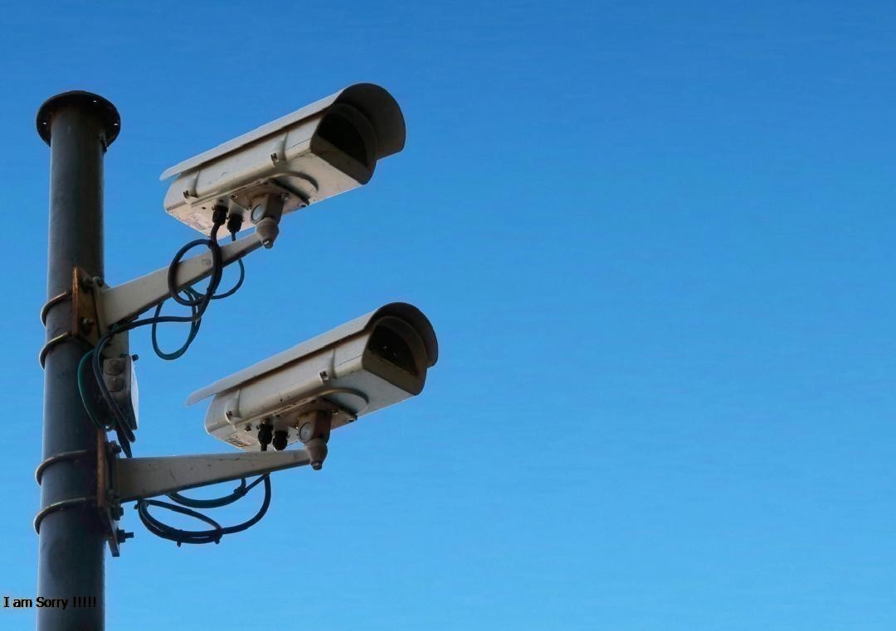
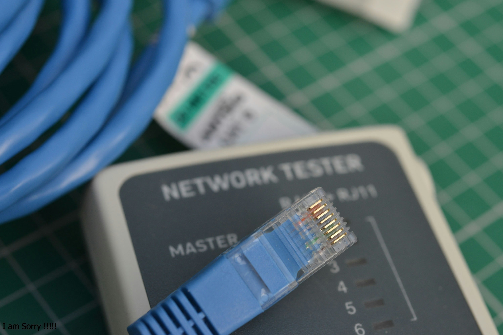
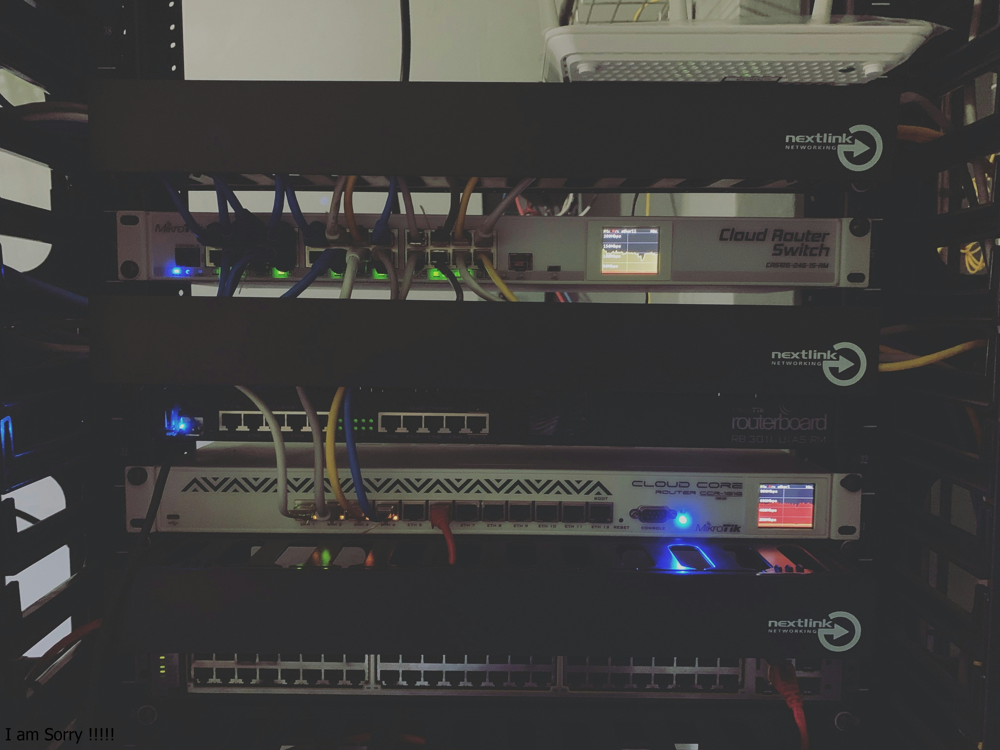

About Us
West Bridge System (WBS) is dedicated to providing top-notch solutions for your business needs. Our team of experts is committed to delivering excellence in every project we undertake. We prioritize customer satisfaction and innovative approaches.
Our Services
At West Bridge System, we offer a comprehensive range of services to meet the diverse needs of our clients.
Our team of experts is dedicated to delivering high-quality solutions tailored to your specific requirements.
- GPS Tracker Installation
- Software Development
- Camera Installations
- Network Installation
- Computer Repairs
- Web Development
Camera Installations
We specialize in camera installations to enhance your security and surveillance systems. Our team ensures that your cameras are installed correctly and efficiently, providing you with peace of mind. Our camera installation services include a wide range of options to suit your specific needs, whether for residential, commercial, or industrial purposes. We use the latest technology to ensure high-quality video surveillance and reliable performance. Our team provides expert advice on camera placement, system configuration, and maintenance to maximize the effectiveness of your security setup. Trust WBS to deliver solutions that keep your property safe and secure.



Computer Repairs
Our support and maintenance services ensure that your systems run smoothly and efficiently. We offer quick and reliable repairs for all types of computer issues, from hardware to software problems. Our team of experts is here to help you get back on track as quickly as possible.


Network Installation
We provide robust and reliable network infrastructure—from design to implementation.
Our team ensures that your network is secure, efficient, and tailored to your business needs.
We also offer ongoing support and maintenance to keep your network running smoothly.
Whether you need a simple home network or a complex enterprise solution, we have the expertise to deliver.
Our team of experts is dedicated to delivering high-quality solutions tailored to your specific requirements.



Web Development
We help you create a professional and user-friendly website to represent your brand online. Our web development services include responsive design, e-commerce solutions, and content management systems. We work closely with you to understand your goals and deliver a website that meets your needs.